项目概览
Project Shiguangque, Your AI Learning Companion
B+C Experience Design Portfolio
Guangzhou, China (Open to Remote)
AI-Driven Learning Path
Multi-Mode Interaction System
3D Mascot & Brand DNA
App Component Library
AIGC Workflow Integration
项目背景
AI引导 · 结构化拆解 · 沉浸式追踪
全栈主设 | C端体验 | 品牌视觉全案
2023-2024（东南亚市场）
Figma | AIGC 辅助生成 | Lottie
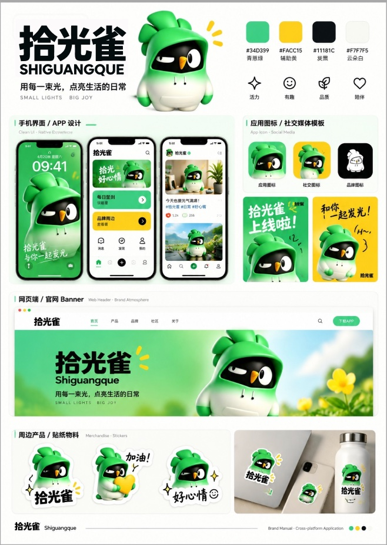
问题洞察
Shiguangque·学习体验重塑
我们得出结论：
高认知负荷只是冰山一角
Mode Switching 多模式切换繁琐，极易打断学习心流。
Single AI AI讲解形式单一，难以适配不同层级。
Cognitive Load 知识缺乏结构拆解，学习门槛过高。
Feedback 进度反馈缺失，难以判断学习成果。
-40% 概念沟通时间 | +35% 学习目标完成率 | -30% 用户首日流失率
方案展示
AI 驱动的
AI-Driven Immersive Learning
沉浸式学习
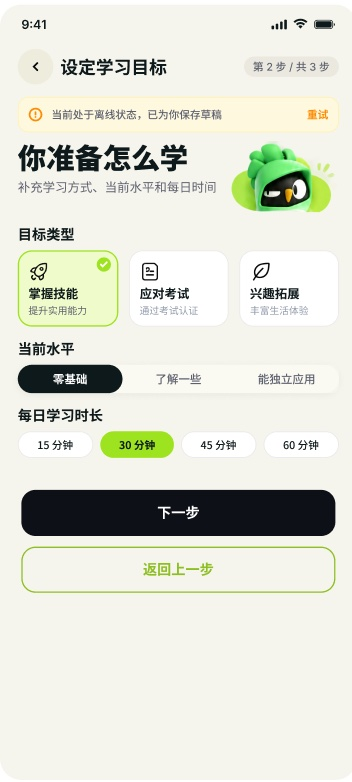
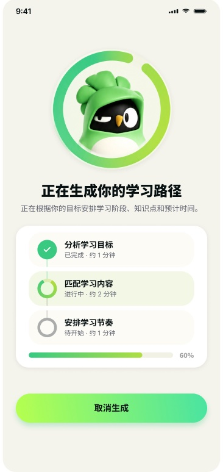
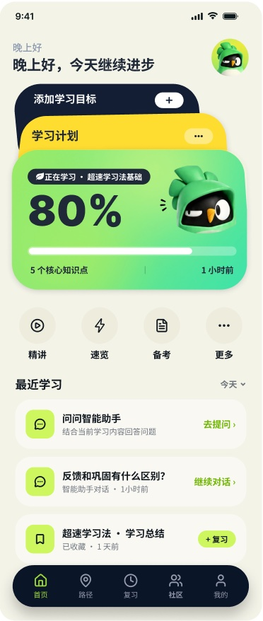
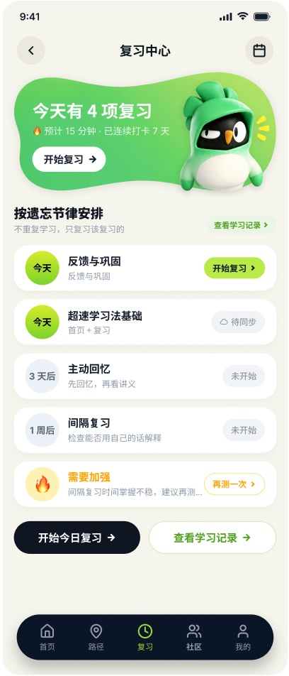
左右滑动
方案展示
Brand DNA & Design System
视觉语言
与品牌系统
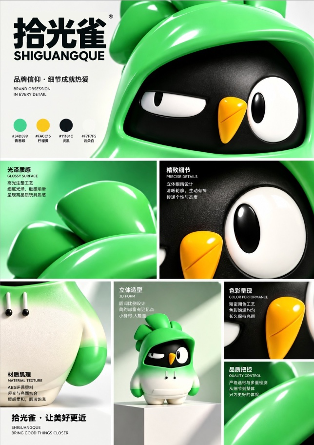
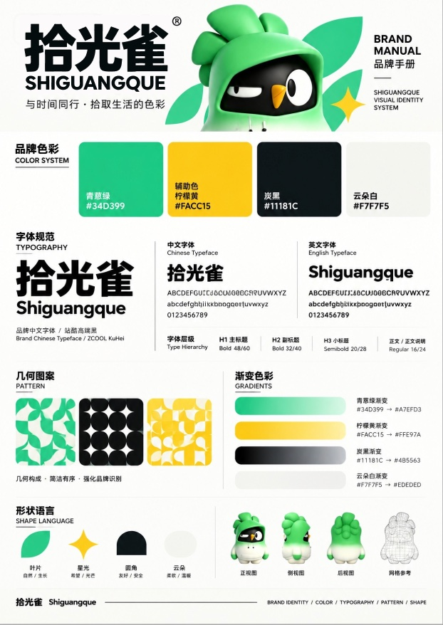
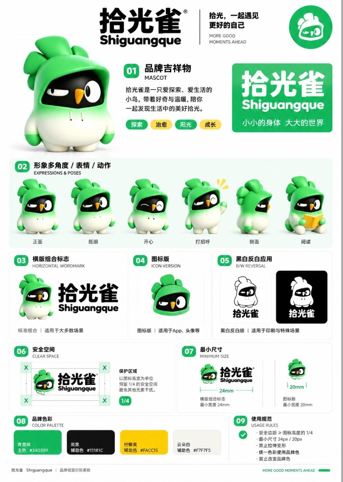
左右滑动
品牌资产
品牌资产
核心全链路
界面交付
High-Fidelity UI & Full-Chain Delivery
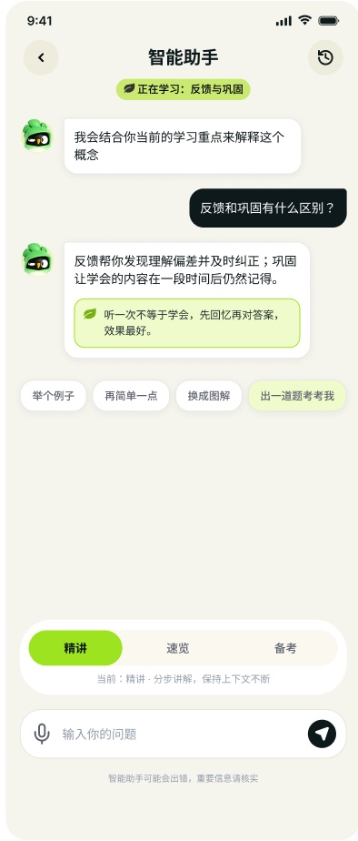
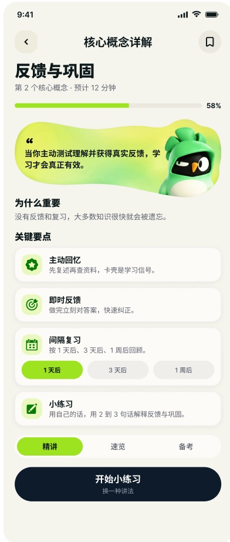
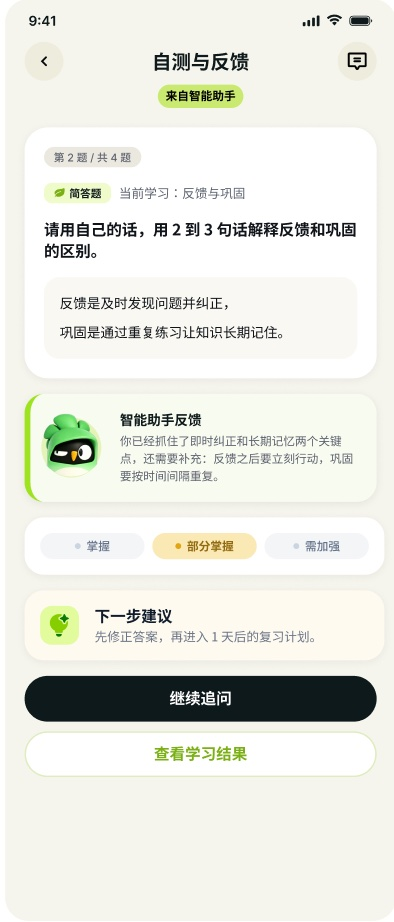
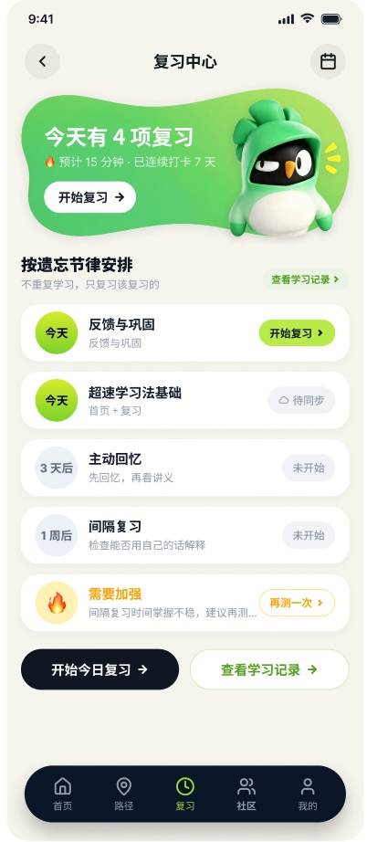
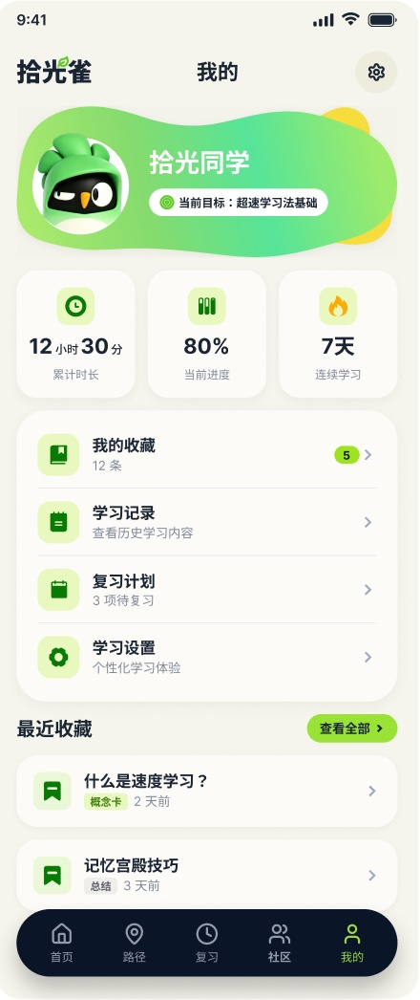
左右滑动
项目复盘
Retrospective & Value Creation
项目复盘
与价值沉淀
“用有温度的3D IP打破AI的冰冷，用结构化的智能引导重塑学习体验，让每一次学习都有迹可循。”
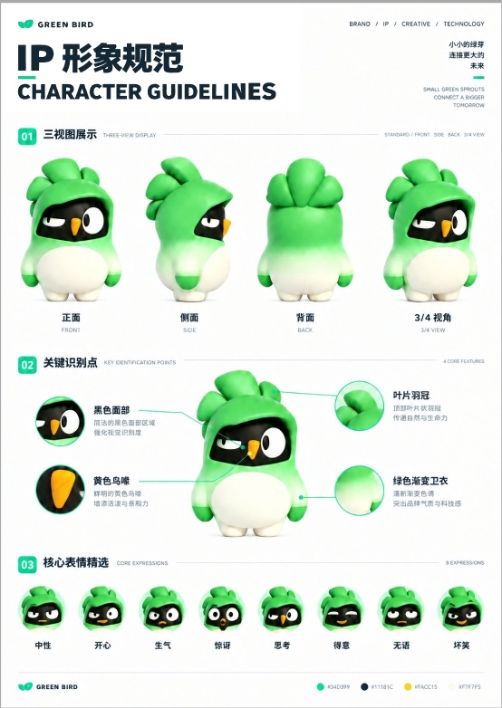
左右滑动